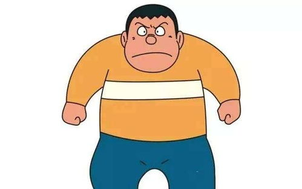

首页 > 胖虎
名称:刚田武
爱好：棒球、唱歌、煮饭
生日：1964年6月15日
特长：体育、打人、不负责任
最害怕的人：妈妈、老师
梦想：成为世界级歌星
最崇拜的人：会柔道的叔叔
宠物：小花（狗）
他的棒球队：巨人队（大胖队）
血型：AB型
星座：双子座
属性：武力 勇敢 粗心 暴躁 短发 正义 黑色眼睛 黑发
简介：刚田武，中文又译胖虎、技安。是日本动画及漫画《哆啦A梦》中一位重要的角色，设定在1964年6月15日出生。 刚田武在漫画中是所有孩子们里体型最胖最高的，外号“巨人”（ジャイアン），是英语 Giant的片假名读法，港台地区旧译技安是这个绰号的音译。哆啦A梦和孩子们一般都用绰号而非本名称呼他。长辈们称呼胖虎则称之本名“小武”而不用绰号，但在中文译制的漫画和卡通中却完全忽略此特点。个性粗暴，容易冲动，什么事都想着用武力解决。经常借别人的东西不还。
人物人物分析：强壮有力，情绪暴躁，欺负弱小，是个粗鲁的孩子王，对于不顺眼的人或事物便以暴力相向。目标是当歌星，可是他的歌声非常差劲(还吓退过妖怪)。他常常以武力逼迫其他人去听他的演唱会。优点是勇敢、有正义感，在大长篇里有许多例子。例如第三集中，大胖勇于承担责任，去面对危险。对于同伴，总是以大哥哥的身份照顾大家，是个有情有义的人物。